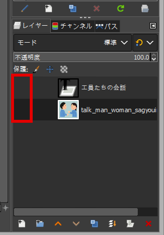
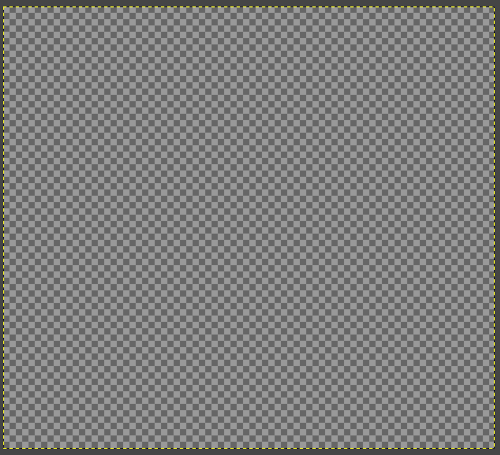

キャンバス
画像ファイルをインポートした場合、 GIMP はインポートされた画像を 1 枚のレイヤーとして土台となるキャンバス上に展開します。
ドッグ下部のレイヤーダイアログで 保護 列にある目のマークを押下して消し、すべてのレイヤーを非表示にすると格子模様の土台が現れます。

この土台がキャンバスです。

Tip
キャンバスはメニュー 画像 > キャンバスサイズの変更 やメニュー 画像 > キャンバスをレイヤーに合わせる などでサイズの変更ができます。
Note
変形ツールの 切り抜き で画像の一部を切り抜いた場合、レイヤーは保持されたままでキャンバスサイズが変更されます。